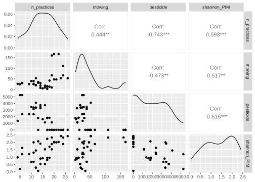
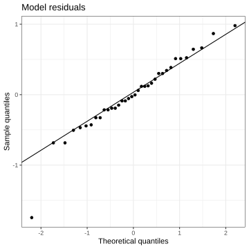
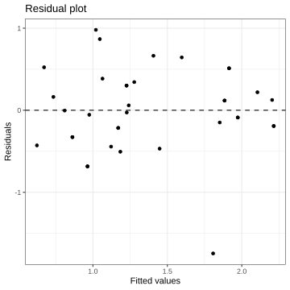
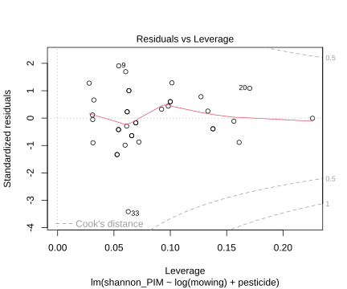
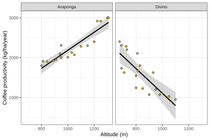

![]()
Show me the code
install.packages("GGally")
install.packages("olsrr")The goal of this tutorial is to understand and apply multiple linear regression models to examine the relationship between a numerical variable (the response variable) and several predictor (or independent) variables. You will learn how to check for collinearity, how to estimate the model coefficients, and test the statistical significance of the model. In addition, you will learn how to compare different models and interpret their output. Finally, we will check whether the assumptions underlying linear regression are satisfied.
Let’s get started!
In this tutorial, we will need to use functions in the GGally and olsrr packages. Make sure to install these packages before starting the tutorial.
install.packages("GGally")
install.packages("olsrr")To work on this tutorial, you will need to load the readxl, tidyverse, GGally, and olsrr packages.
library(readxl)
library(tidyverse)
library(GGally)
library(olsrr)Start by importing the data used in this course (see previous tutorials).
#Option 1 (csv file)
data <- read_csv("gss_statistics_master_data_set2.csv")
#Option 2 (Excel file)
data <- read_excel("gss_statistics_master_data_set2.xlsx")Multiple linear regression is a statistical method used to explain or predict the value of one continuous response variable (\(y\)) based on two or more predictor variables (\(x_1, x_2,...,x_n\)) (Equation 1).
\[ y=\beta_0+\beta_1x_1+\beta_2x_2+...+\beta_nx_n+\epsilon \tag{1}\]
In this equation, \(\beta_0\) is the intercept and \(\beta_{1,2,...,n}\) are the slopes. \(\epsilon\) is the model residual (error).
The intercept (\(\beta_0\)) represents the predicted value of \(y\) when all the predictor variables are equal to zero.
Each slope (\(\beta_{1,2,...,n}\)) represents the expected change in \(y\) when that predictor increases by one-unit while holding all the other predictors constant.
In this tutorial, we will analyze how the number of agroecological practices (n_practices), mowing intensity (mowing), and pesticide use (pesticide) affect plant diversity (shannon_PIM).
Let’s first examine the relationships among the variables. At this stage, we want to assess whether there is multicollinearity among the explanatory variables and whether the relationships between the response variable and each explanatory variable appear approximately linear.
If two explanatory variables are highly correlated, this suggests potential multicollinearity. In such cases, we may consider excluding one of the strongly correlated variables.
If the relationship between the response variable and a predictor shows a clear non-linear pattern, such as a curved trend, we may consider transforming the variable or including a non-linear term in the model.
To visualize pairwise relationships between variables, we can use the ggpairs() function in the GGally package. The output of ggpairs() is a graph displaying a scatter plot for each relationship, as well as their Pearson’s correlation coefficients.
subdata) that only contains the variables of interest for this tutorial (n_practices, mowing, pesticide, shannon_PIM).ggpairs() to visualize pairwise relationships between these variables.subdata <- dplyr::select(data,
n_practices,
mowing,
pesticide,
shannon_PIM)ggpairs(subdata)
Among the explanatory variables, pesticide and n_practices are the most strongly correlated (r = -0.743). The correlation between the other explanatory variables is weaker (r = 0.444 and r = -0.473).
When looking at the relationship between the response variable (shannon_PIM) and each explanatory variable, we can see that the relationship between plant diversity and mowing intensity seems asymptotic, while the relationship between plant diversity and the other explanatory variables looks more linear.
Let’s start by fitting the most complicated model including all three explanatory variables and their two-way and three-way interactions. We can do this using the lm() function in R.
lm() to fit a multiple linear regression model using plant diversity (shannon_PIM) as the response variable, and the number of agroecological practices (n_practices), mowing intensity (mowing), and pesticide use (pesticide) as explanatory variables. Include all two-way and three-way interactions in this model. Store model output in an R object called model1.summary() function on the model1 object.model1 <- lm(shannon_PIM ~ n_practices*mowing*pesticide,
data = subdata)summary(model1)
Call:
lm(formula = shannon_PIM ~ n_practices * mowing * pesticide,
data = subdata)
Residuals:
Min 1Q Median 3Q Max
-1.45191 -0.18385 -0.01184 0.25254 1.01461
Coefficients:
Estimate Std. Error t value Pr(>|t|)
(Intercept) 7.926e-01 1.089e+00 0.728 0.473
n_practices 5.580e-02 5.889e-02 0.948 0.351
mowing -1.879e-03 2.592e-02 -0.072 0.943
pesticide 2.305e-04 6.579e-04 0.350 0.729
n_practices:mowing 1.362e-04 1.283e-03 0.106 0.916
n_practices:pesticide -4.320e-05 4.759e-05 -0.908 0.372
mowing:pesticide -8.400e-06 2.391e-05 -0.351 0.728
n_practices:mowing:pesticide 1.201e-06 1.841e-06 0.652 0.519
Residual standard error: 0.5224 on 28 degrees of freedom
Multiple R-squared: 0.564, Adjusted R-squared: 0.4551
F-statistic: 5.175 on 7 and 28 DF, p-value: 0.0007201Although the model explains 45.5% of the total variation in plant diversity, none of the estimated regression coefficients are statistically different from zero (p > 0.05). This indicates that, once uncertainty is taken into account, we cannot detect a clear effect of any predictor on plant diversity. Consequently, despite the relatively moderate R2, the model does not provide evidence that the explanatory variables are associated with plant diversity, and its explanatory value is therefore limited.
Let’s now fit a simpler model that includes all explanatory variables, but not their two-way and three-way interactions.
lm() to fit a multiple linear regression model using plant diversity (shannon_PIM) as the response variable, and the number of agroecological practices (n_practices), mowing intensity (mowing), and pesticide use (pesticide) as explanatory variables. Do not include any interaction term in this model. Store model output in an R object called model2.summary() function on the model2 object.model2 <- lm(shannon_PIM ~ n_practices + mowing + pesticide,
data = subdata)summary(model2)
Call:
lm(formula = shannon_PIM ~ n_practices + mowing + pesticide,
data = subdata)
Residuals:
Min 1Q Median 3Q Max
-1.45573 -0.34748 0.02186 0.26529 1.03048
Coefficients:
Estimate Std. Error t value Pr(>|t|)
(Intercept) 9.559e-01 5.043e-01 1.896 0.0671 .
n_practices 3.139e-02 2.463e-02 1.275 0.2116
mowing 4.330e-03 2.451e-03 1.766 0.0869 .
pesticide -1.309e-04 8.356e-05 -1.566 0.1271
---
Signif. codes: 0 '***' 0.001 '**' 0.01 '*' 0.05 '.' 0.1 ' ' 1
Residual standard error: 0.5378 on 32 degrees of freedom
Multiple R-squared: 0.4721, Adjusted R-squared: 0.4226
F-statistic: 9.539 on 3 and 32 DF, p-value: 0.0001191This simpler model explains 42.3% of the total variation in plant diversity (which is close to the R2 value from the more complicated model we fitted in the first exercise), but none of the estimated regression coefficients are statistically different from zero (p > 0.05). Among all the explanatory variables included in the model, n_practices has the lowest t statistic value and the largest p-value. This variable was also strongly correlated with pesticide use. A logical next step to make a better model could be to remove the n_practices variable from the model.
Let’s now fit a new model that only includes pesticide use (pesticide) and mowing intensity (mowing) as explanatory variables.
lm() to fit a multiple linear regression model using plant diversity (shannon_PIM) as the response variable, and mowing intensity (mowing) and pesticide use (pesticide) as explanatory variables. Do not include any interaction term in this model. Store model output in an R object called model3.summary() function on the model3 object.model3 <- lm(shannon_PIM ~ mowing + pesticide,
data = subdata)summary(model3)
Call:
lm(formula = shannon_PIM ~ mowing + pesticide, data = subdata)
Residuals:
Min 1Q Median 3Q Max
-1.65174 -0.34054 0.01613 0.29181 1.01955
Coefficients:
Estimate Std. Error t value Pr(>|t|)
(Intercept) 1.542e+00 2.082e-01 7.409 1.64e-08 ***
mowing 4.823e-03 2.444e-03 1.974 0.05685 .
pesticide -2.027e-04 6.226e-05 -3.256 0.00261 **
---
Signif. codes: 0 '***' 0.001 '**' 0.01 '*' 0.05 '.' 0.1 ' ' 1
Residual standard error: 0.5428 on 33 degrees of freedom
Multiple R-squared: 0.4453, Adjusted R-squared: 0.4117
F-statistic: 13.25 on 2 and 33 DF, p-value: 5.984e-05This new model is highly significant (p < 0.001) and explains 41.2% of the total variation in plant diversity. Two regression coefficients are significantly different from zero: the intercept of the model and the slope of the pesticide variable. The slope of the mowing variable is not significantly different from zero (p > 0.05).
Because the relationship between plant diversity (shannon_PIM) and mowing intensity (mowing) appeared asymptotic, a reasonable next step would be to apply a log transformation to the mowing variable and refit the model using this transformed predictor. A log transformation can help linearize asymptotic relationships, improve model fit, and better meet the assumptions of linear regression.
lm() to fit a multiple linear regression model using plant diversity (shannon_PIM) as the response variable, and the logarithm of mowing intensity (log(mowing)) and pesticide use (pesticide) as explanatory variables. Do not include any interaction term in this model. Store model output in an R object called model4.summary() function on the model4 object.model4 <- lm(shannon_PIM ~ log(mowing) + pesticide,
data = subdata)summary(model4)
Call:
lm(formula = shannon_PIM ~ log(mowing) + pesticide, data = subdata)
Residuals:
Min 1Q Median 3Q Max
-1.74523 -0.24342 -0.01516 0.31162 0.98015
Coefficients:
Estimate Std. Error t value Pr(>|t|)
(Intercept) 8.659e-01 4.244e-01 2.040 0.04938 *
log(mowing) 2.636e-01 1.075e-01 2.453 0.01963 *
pesticide -2.073e-04 5.764e-05 -3.597 0.00104 **
---
Signif. codes: 0 '***' 0.001 '**' 0.01 '*' 0.05 '.' 0.1 ' ' 1
Residual standard error: 0.5279 on 33 degrees of freedom
Multiple R-squared: 0.4755, Adjusted R-squared: 0.4437
F-statistic: 14.96 on 2 and 33 DF, p-value: 2.379e-05This new model is highly significant (p < 0.001) and explains 44.4% of the total variation in plant diversity. All regression coefficients are significantly different from zero (p < 0.05).
The Akaike Information Criterion (AIC) is a measure used to compare statistical models and select the one that best balances goodness of fit and model complexity. It is based on the idea that a good model should explain the data well while using as few parameters as necessary.
AIC is calculated from the model’s likelihood and includes a penalty for the number of estimated parameters. As a result, models with more parameters are penalized to reduce the risk of overfitting. The absolute value of AIC is not meaningful on its own. It is only useful when comparing multiple models fitted to the same dataset.
In model selection, the model with the lowest AIC is preferred. Differences in AIC (ΔAIC) are often used to assess the relative support for competing models. Small differences suggest that models have similar support, whereas large differences indicate stronger evidence for the model with the lower AIC.
In R, AIC values can be calculated by running the AIC() function on one or more model objects. We will now use it to calculate AIC values for all the models fitted in the previous exercises.
AIC() function to calculate the AIC values of model1, model2, model3, and model4.AIC(model1,
model2,
model3,
model4) df AIC
model1 9 64.37036
model2 5 63.25960
model3 4 63.04242
model4 4 61.02963The model with the smallest AIC value is model4. This indicates that, among the four models being compared, model4 provides the best balance between goodness of fit (model likelihood) and model complexity (number of estimated parameters).
Standardized regression coefficients are regression coefficients obtained after all variables (both the response and the predictors) have been standardized, typically by subtracting their mean and dividing by their standard deviation (z-score transformation). This transformation puts all variables on the same scale, with a mean of zero and a standard deviation of one. In R, variables can be transformed in this way using the scale() function.
Standardized regression coefficients are primarily used to compare the relative importance of predictors within the same model. Because the variables are expressed on a common scale, the magnitude of the standardized coefficients indicates which predictors have stronger or weaker associations with the response variable.
lm() to fit a multiple linear regression model using scaled plant diversity (scale(shannon_PIM)) as the response variable, and the scaled logarithm of mowing intensity (scale(log(mowing))) and scaled pesticide use (scale(pesticide)) as explanatory variables. Do not include any interaction term in this model. Store model output in an R object called model5.summary() function on the model5 object.model5 <- lm(scale(shannon_PIM) ~ scale(log(mowing)) + scale(pesticide),
data = subdata)summary(model5)
Call:
lm(formula = scale(shannon_PIM) ~ scale(log(mowing)) + scale(pesticide),
data = subdata)
Residuals:
Min 1Q Median 3Q Max
-2.46600 -0.34396 -0.02142 0.44032 1.38494
Coefficients:
Estimate Std. Error t value Pr(>|t|)
(Intercept) 4.337e-17 1.243e-01 0.000 1.00000
scale(log(mowing)) 3.341e-01 1.362e-01 2.453 0.01963 *
scale(pesticide) -4.899e-01 1.362e-01 -3.597 0.00104 **
---
Signif. codes: 0 '***' 0.001 '**' 0.01 '*' 0.05 '.' 0.1 ' ' 1
Residual standard error: 0.7459 on 33 degrees of freedom
Multiple R-squared: 0.4755, Adjusted R-squared: 0.4437
F-statistic: 14.96 on 2 and 33 DF, p-value: 2.379e-05The absolute value of the standardized regression coefficient of the pesticide variable is the largest, meaning it has the strongest effect on plant diversity.
After fitting a linear model, you can check whether the normality assumption is met by examining whether the model residuals are approximately normally distributed. This can be done by (1) using the residuals() function on the model4 object to extract the model residuals (i.e. the differences between observed values and model predictions), (2) applying a Shapiro-Wilk test to the residuals, and (3) creating a Q-Q plot using model residuals.
residuals() function on the model4 object. Store these residuals in a new column (div_residuals) in the subdata object.subdata$div_residuals <- residuals(model4)shapiro.test(subdata$div_residuals)
Shapiro-Wilk normality test
data: subdata$div_residuals
W = 0.9488, p-value = 0.09587ggplot(subdata, aes(sample = div_residuals)) +
stat_qq() +
stat_qq_line() +
theme_bw() +
xlab("Theoretical quantiles")+
ylab("Sample quantiles")+
ggtitle("Model residuals")
The p-value of the Shapiro-Wilk test is greater than the significance threshold (0.05). Therefore, we fail to reject the null hypothesis that the model residuals are normally distributed. This result is supported by the Q-Q plot, in which most points lie close to the reference line (it is worth noting that one extreme quantile value seems to strongly deviate from the reference line).
After fitting a linear model, you can check the homoscedasticity assumption by creating a residual plot.
A residual plot shows the model residuals plotted against the fitted values. A residual is the difference between an observed value and the value predicted by the model. The fitted value is simply the value predicted by the model for that observation. Each point in the residual plot represents one observation. Its horizontal position shows the fitted value, while its vertical position shows the residual, indicating how far that observation lies above or below the model prediction.
Residual plots are used to assess the assumption of homoscedasticity, which means that the variance of the residuals is constant across the range of fitted values. If this assumption is met, the residuals should be randomly scattered around zero with no clear pattern and a roughly constant spread. In contrast, patterns such as a funnel shape (increasing or decreasing spread) would indicate heteroscedasticity, suggesting that the assumption of equal variances may be violated.
To create a residual plot, we first need to extract model residuals (residuals()) and fitted values (fitted()). We already extracted the model residuals earlier (div_residuals column).
fitted() function on the model4 object. Store these values in a new column (div_fitted) in the subdata object.subdata$div_fitted <- fitted(model4)ggplot(subdata, aes(x = div_fitted,
y = div_residuals)) +
geom_point() + #Add points to the plot
geom_hline(yintercept = 0,
linetype = "dashed")+ #Add horizontal dashed line at y=0
theme_bw() +
xlab("Fitted values")+
ylab("Residuals")+
ggtitle("Residual plot")
The residuals are well scattered around zero. There is no clear systematic pattern, such as a funnel shape, that would indicate heteroscedasticity. This suggests that the assumption of homoscedasticity is reasonably met.
A plot of residuals versus leverage is commonly used to identify influential observations in a linear regression model. In this plot, the leverage values (which measure how far an observation’s predictor value is from the mean of the predictor) are shown on the x-axis, and the standardized residuals are shown on the y-axis.
Observations are potentially influential if they combine high leverage with large residuals. High leverage alone does not necessarily make a point influential, and neither does a large residual on its own. However, a data point that lies far to the right (high leverage) and far from zero vertically (large residual) can have a strong impact on the estimated regression coefficients. Such points are often highlighted using contours of Cook’s distance in the plot. Observations that lie beyond these contours should be examined carefully (especially if Cook’s distance is larger than 1), as they may disproportionately affect the fitted model and its conclusions.
In R, you can easily create such a graph using plot(model, which=5). The which argument specifies the type of plot we want to create (here, a residuals vs leverage plot). In addition, you can also calculate Cook’s distance values by running the cooks.distance() function on your linear model object (model4).
model4).cooks.distance().plot(model4, which = 5)
cooks.distance(model4) 1 2 3 4 5 6
2.931126e-05 6.162495e-02 1.171256e-03 6.959609e-03 1.564835e-02 4.849678e-03
7 8 9 10 11 12
1.171256e-03 8.175952e-03 6.965889e-02 7.483288e-04 1.337587e-02 2.969563e-02
13 14 15 16 17 18
3.291517e-02 2.256411e-02 9.635902e-03 9.635902e-03 1.966514e-02 2.069233e-02
19 20 21 22 23 24
3.347721e-03 8.129837e-02 3.354294e-03 3.354294e-03 6.236238e-02 5.019710e-02
25 26 27 28 29 30
1.390232e-04 8.755990e-03 7.483288e-04 7.905871e-04 8.175952e-03 3.555127e-03
31 32 33 34 35 36
1.842960e-03 4.452395e-06 2.599312e-01 1.337587e-02 3.291517e-02 2.256411e-02 Observations 33 stands out due to their comparatively high residual value. No observation has a Cook’s distance exceeding 0.5, indicating that none exerts a strong influence on the estimated regression coefficients.
In the first part of this tutorial, we explored collinearity by visually inspecting scatter plots and by calculating correlation coefficients. Collinearity (or multicollinearity) occurs when two or more predictors are strongly correlated, meaning they contain overlapping information, which is not ideal.
After fitting a linear model, we can assess collinearity using two related measures: tolerance and the variance inflation factor (VIF). Tolerance measures the proportion of variation in a given predictor that is not explained by the other predictors in the model (\(1-R_i^2\)). \(R_i^2\) is the unadjusted coefficient of determination for regressing the ith independent variable on the remaining ones. Low tolerance values indicate that a predictor is largely explained by the others, suggesting problematic collinearity. The variance inflation factor is directly related to tolerance (Equation 2). Larger VIF values indicate stronger multicollinearity. If the VIF value of a predictor is larger than 5, we may consider removing it from the model.
\[ VIF=\frac{1}{Tolerance}=\frac{1}{1-R_i^2} \tag{2}\]
In R, you can calculate these parameters using the ols_vif_tol() function in the olsrr package.
ols_vif_tol() to calculate the tolerance and variance inflation factor for each explanatory variable included in model4.ols_vif_tol(model4) Variables Tolerance VIF
1 log(mowing) 0.8568252 1.167099
2 pesticide 0.8568252 1.167099All VIF values are lower than 2, which suggests that multicollinearity is not an issue in this model.
So far, the models we fitted in this tutorial only included numeric explanatory variables, but it is also possible to include categorical variables in such a model. To illustrate this, let’s model coffee productivity (coffee_prod) as a function of altitude (altitude) and municipality (municipality).
lm() to fit a multiple linear regression model using coffee productivity (coffee_prod) as the response variable, and altitude (altitude) and municipality (municipality) as explanatory variables. Include a two-way interaction in this model. Store model output in an R object called model6.summary() function on the model6 object.coffee_prod) and altitude (altitude) for each municipality (municipality). Add fitted linear models to this scatter plot as well.model6 <- lm(coffee_prod ~ altitude*municipality,
data = data)summary(model6)
Call:
lm(formula = coffee_prod ~ altitude * municipality, data = data)
Residuals:
Min 1Q Median 3Q Max
-481.0 -174.1 21.9 167.8 411.4
Coefficients:
Estimate Std. Error t value Pr(>|t|)
(Intercept) -77.7510 364.5613 -0.213 0.832
altitude 2.2614 0.3465 6.526 2.39e-07 ***
municipalityDivino 4275.8264 530.6083 8.058 3.35e-09 ***
altitude:municipalityDivino -5.3534 0.5732 -9.339 1.17e-10 ***
---
Signif. codes: 0 '***' 0.001 '**' 0.01 '*' 0.05 '.' 0.1 ' ' 1
Residual standard error: 239 on 32 degrees of freedom
Multiple R-squared: 0.8303, Adjusted R-squared: 0.8143
F-statistic: 52.17 on 3 and 32 DF, p-value: 2.011e-12\[ coffeeprod=-77.75+2.26 \times altitude+4275.83 \times Divino - 5.35 \times altitude \times Divino \]
ggplot(data, aes(x = altitude,
y = coffee_prod))+
facet_wrap(~municipality)+
geom_smooth(method="lm",
colour = "black")+
geom_point(shape=21,
fill = "#FFCD00",
colour = "black")+
theme_bw()+
xlab("Altitude (m)")+
ylab("Coffee productivity (kg/ha/year)")
Coffee productivity increases with altitude in the municipality of Araponga, as indicated by the positive regression coefficient for altitude. In contrast, in Divino the relationship is reversed. The negative interaction coefficient (-5.35) is larger in magnitude than the positive main effect of altitude (2.26), resulting in a negative overall slope for altitude in Divino (2.26-5.35 = -3.09).
The linear model has the following equation:
\[ coffeeprod=-77.75+2.26 \times altitude+4275.83 \times Divino - 5.35 \times altitude \times Divino \]
In this equation, altitude is a numeric variable, while Divino is a dummy variable that can only take the value 0 (when we want to make a prediction for the Araponga municipality) or 1 (when we want to make a prediction for the Divino municipality).
Let’s first make a prediction for coffee productivity at an altitude of 1000 m in the municipality of Araponga. In this case, we need to set Divino=0. The equation of the linear model therefore becomes:
\[ coffeeprod=-77.75+2.26 \times altitude+4275.83 \times 0 - 5.35 \times altitude \times 0 \]
\[ coffeeprod=-77.75+2.26 \times altitude \]
At an altitude of 1000 m, the coffee productivity in Araponga can be calculated as:
\[ coffeeprod=-77.75+2.26 \times 1000 = 2182.25 \space kg/ha/year \]
To make a prediction for the municipality of Divino, we need to set Divino=1 in the equation of the linear model. The equation of the linear model therefore becomes:
\[ coffeeprod=-77.75+2.26 \times altitude+4275.83 \times 1 - 5.35 \times altitude \times 1 \]
At an altitude of 1000 m, the coffee productivity in Divino can be calculated as:
\[ coffeeprod=4198.08-3.09 \times 1000 = 1108.08 \space kg/ha/year \]